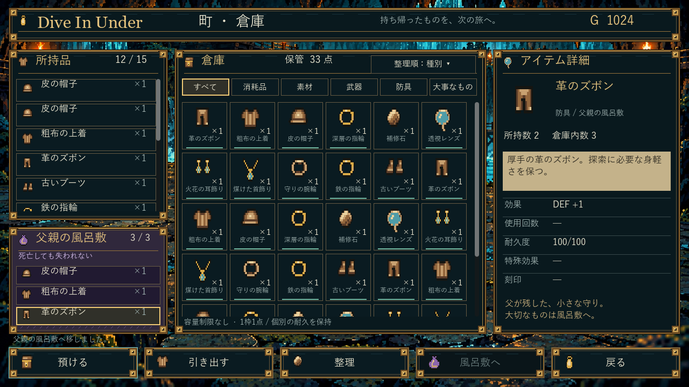
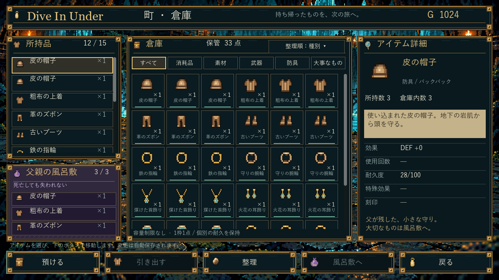
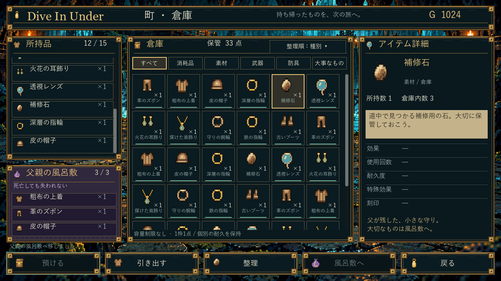
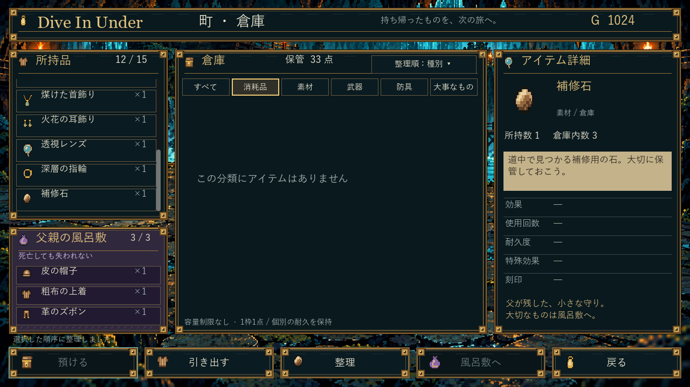
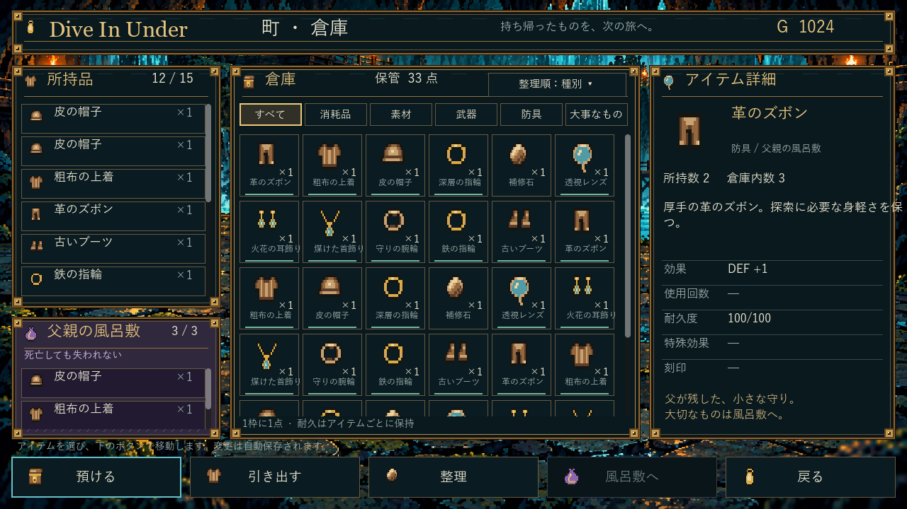

通常版0.5.3へ反映済み：現在の画面と起動はこちら
Dive In Under — 町・倉庫
実装開発版 0.5.1 / 1280×720 / 通常入口は0.4.6を維持
「続きから」で固定品揃えの倉庫を開きます。検証用の所持金・個数です。通常ゲームのセーブには触れません。倉庫は容量制限なしの現行仕様を表示し、正式上限は未決です。

所持品・倉庫・詳細を同時に比較。風呂敷は紫、選択は金色。下部5操作を固定。CI成功：通常10F再開・旧保存・修理・倉庫操作・別EXE再開も通過。
耐久と素材を正しく表示

装備の効果は個体の残耐久を反映。移動・整理・保存でも保持。
未定義の効果・使用回数・耐久・刻印は「—」。画面に装備着脱やステータスは混在しません。空の分類と再起動

カテゴリに中身がないときも選択品の詳細と操作を保ちます。別EXEで再起動し、同じ所有・耐久のセーブを復元。自己レビューで修正

修正前：説明文のはみ出しと風呂敷3枠目の見切れを確認。上の完成画像では幅と高さを修正しました。収納16項目・既存耐久39項目・所有/保存180項目とUI操作を確認。ビルドSHA / 操作記録 / 別EXE再開。工程2全体は進行中です。